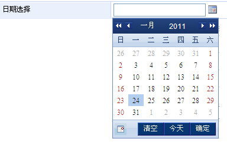
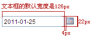
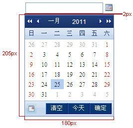
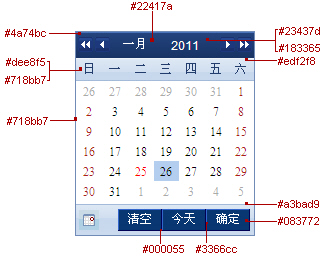
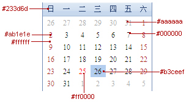
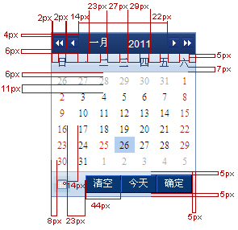
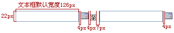

1.1 日期控件外观
| 规则编号 | 对象 | 外观描述 |
| 【规则1-1-1】 | 整体说明 |
1. 日期控件是设置选取业务系统时间，日期控件的交互组件分为文本输入框和弹出框两部分； 2. 日期控件的标准样式如下图所示：  |
| 【规则1-1-2】 | 文本框/日期面板 |
1、日期面板大小宽:180px 高:205px与文本框之间的间距为4px；（如下图所示）   2、日期面板色值如下图所示：   3、日期面板间距示意图：  |
| 【规则1-1-3】 | 文本输入框 |
1. 日期文本输入框分为单个日期输入框和组合日期输入框两种样式, 2. 组合日期输入框样式如下图所示：  |